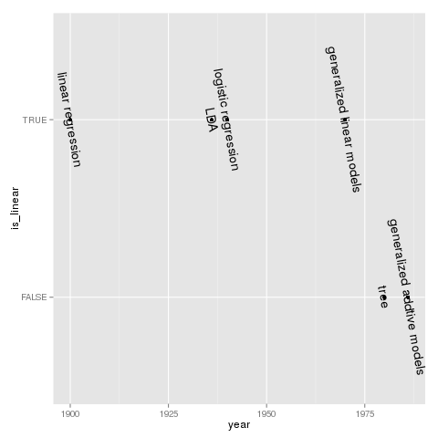

ISL summary
Table of Contents
Todo
org-confirm-babel-evaluate org-babel-default-header-args:<lang>
Introduction
library(ggplot2) history_of_statiscal_learning <- data.frame(method = c("linear regression", "LDA", "logistic regression", "generalized linear models", "tree", "generalized addtive models" ), year = c(1900, 1936, 1940, 1970, 1980, 1986), is_linear <- c(TRUE, TRUE, TRUE, TRUE, FALSE, FALSE)) ggplot(data = history_of_statiscal_learning, aes(x = year, y = is_linear)) + geom_point() + geom_text(label = as.character(history_of_statiscal_learning$method), angle = -80)

data set
Wage
| year | Year that wage information was recorded |
| age | Age of worker |
| sex | Gender |
| maritl | A factor with levels '1. Never Married' '2. Married' '3. Widowed' '4. Divorced' and '5. Separated' indicating marital status |
| race | A factor with levels '1. White' '2. Black' '3. Asian' and '4. Other' indicating race |
| education | A factor with levels '1. < HS Grad' '2. HS Grad' '3. Some College' '4. College Grad' and '5. Advanced Degree' indicating education level |
| region | Region of the country (mid-atlantic only) |
| jobclass | A factor with levels '1. Industrial' and '2. Information' indicating type of job |
| health | A factor with levels '1. <=Good' and '2. >=Very Good' indicating health level of worker |
| health_ins | A factor with levels '1. Yes' and '2. No' indicating whether worker has health insurance |
| logwage | Log of workers wage |
| wage | Workers raw wage |
library(ISLR)
str(Wage)
'data.frame': 3000 obs. of 12 variables: $ year : int 2006 2004 2003 2003 2005 2008 2009 2008 2006 2004 ... $ age : int 18 24 45 43 50 54 44 30 41 52 ... $ sex : Factor w/ 2 levels "1. Male","2. Female": 1 1 1 1 1 1 1 1 1 1 ... $ maritl : Factor w/ 5 levels "1. Never Married",..: 1 1 2 2 4 2 2 1 1 2 ... $ race : Factor w/ 4 levels "1. White","2. Black",..: 1 1 1 3 1 1 4 3 2 1 ... $ education : Factor w/ 5 levels "1. < HS Grad",..: 1 4 3 4 2 4 3 3 3 2 ... $ region : Factor w/ 9 levels "1. New England",..: 2 2 2 2 2 2 2 2 2 2 ... $ jobclass : Factor w/ 2 levels "1. Industrial",..: 1 2 1 2 2 2 1 2 2 2 ... $ health : Factor w/ 2 levels "1. <=Good","2. >=Very Good": 1 2 1 2 1 2 2 1 2 2 ... $ health_ins: Factor w/ 2 levels "1. Yes","2. No": 2 2 1 1 1 1 1 1 1 1 ... $ logwage : num 4.32 4.26 4.88 5.04 4.32 ... $ wage : num 75 70.5 131 154.7 75 ...
Boston
| crim | per capita crime rate by town. |
| zn | proportion of residential land zoned for lots over 25,000 sq.ft. |
| indus | proportion of non-retail business acres per town. |
| chas | Charles River dummy variable (= 1 if tract bounds river; 0 otherwise). |
| nox | nitrogen oxides concentration (parts per 10 million). |
| rm | average number of rooms per dwelling(e.g, house). |
| age | proportion of owner-occupied units built prior to 1940. |
| dis | weighted mean of distances to five Boston employment centres. |
| rad | index of accessibility to radial highways. |
| tax | full-value property-tax rate per $10,000. |
| ptratio | pupil-teacher ratio by town. |
| black | 1000(Bk - 0.63)^2 where Bk is the proportion of blacks by town. |
| lstat | lower status of the population (percent), percent of households with low locioeconomic status(低社会经济阶层家挺百分比) |
| medv | median value of owner-occupied homes in $1000s, median house value |
library(ISLR)
str(Boston)
'data.frame': 506 obs. of 14 variables: $ crim : num 0.00632 0.02731 0.02729 0.03237 0.06905 ... $ zn : num 18 0 0 0 0 0 12.5 12.5 12.5 12.5 ... $ indus : num 2.31 7.07 7.07 2.18 2.18 2.18 7.87 7.87 7.87 7.87 ... $ chas : int 0 0 0 0 0 0 0 0 0 0 ... $ nox : num 0.538 0.469 0.469 0.458 0.458 0.458 0.524 0.524 0.524 0.524 ... $ rm : num 6.58 6.42 7.18 7 7.15 ... $ age : num 65.2 78.9 61.1 45.8 54.2 58.7 66.6 96.1 100 85.9 ... $ dis : num 4.09 4.97 4.97 6.06 6.06 ... $ rad : int 1 2 2 3 3 3 5 5 5 5 ... $ tax : num 296 242 242 222 222 222 311 311 311 311 ... $ ptratio: num 15.3 17.8 17.8 18.7 18.7 18.7 15.2 15.2 15.2 15.2 ... $ black : num 397 397 393 395 397 ... $ lstat : num 4.98 9.14 4.03 2.94 5.33 ... $ medv : num 24 21.6 34.7 33.4 36.2 28.7 22.9 27.1 16.5 18.9 ...
Statistical learning
Lab: Introduction to R
library(ggplot2) library(dplyr) library(GGally) library(ISLR) x <- rnorm(50) y <- x + rnorm(50, mean = 50, sd = .1) ## 相关系数，两个向量的相关系数 sum( (x - mean(x)) * (y - mean(y)) ) / (length(x) - 1) / sd(x) / sd(y) # E[(X - EX) (Y - EY)] / sd(X) / sd(Y) <- sum[(X - X_bar) (Y - Y_bar)] / (n - 1) / sd(X) / sd(Y) cor(x, y) ## 协方差，若大于0，表明两个向量变化一致（同增，同减） sum( (x - mean(x)) * (y - mean(y)) ) / (length(x) - 1) # E[(X - EX) (Y - EY)] <- sum[(X - X_bar) (Y - Y_bar)] / (n - 1) cov(x, y) ## 3d plot x <- seq( -pi, pi, length = 50) y <- x z <- outer(x, y, function(x, y) cos(y) / (1 + x^2)) # outer product ## contour(x, y, z, nlevels = 20) # use geom_contour() ## image(x, y, z) ## persp(x, y, z) df <- expand.grid(x = x, y = y) %>% mutate(z = cos(y) / (1 + x^2)) ggplot(data = df, aes(x = x, y = y, z = z, fill = z)) + geom_tile() + geom_contour(color = "white", alpha = .5) + scale_fill_gradient(low = "lightblue", high = "magenta") ## paris ## fix(Auto) # 修理数据 ## pairs(Auto) # use ggparis() ggpairs(Auto[, c(1:8)]) # preferred
Linear regression
- confidence interval VS prediction interval
- R^2
- RSE
- F-statistic
- VIF
Lab: linear regression
Explore data
library(ISLR) library(ggplot2) library(GGally) ggpairs(Boston)

Simple linear regression
Regressing medv(房价中位数) onto lstat(低社会经济阶层家庭百分比) using simple linear regression.
### * Load library library(MASS) # large collections of datasets and functions library(ISLR) # functions and datasets assoicated with ISL book ### * Explore data str(Boston) ### * Fit simple_linear_regression_model <- lm(medv ~ lstat, data = Boston) ### ** RSE, R^2, F-statistic ## RSE: residual standard error, estimate of sigma_epsilon ## R^2: [0, 1], 1 - RSS/TSS, 0 ~ denotes the same performance of mean(y), 1 denotes perfect ## F-statistic: H_0: beta_1 = beta_2 = beta_p = 0, if > 1, reject H_0 summary(simple_linear_regression_model) coef(simple_linear_regression_model) ## Confidence interval of beta, more understandabel than p-value confint(simple_linear_regression_model) # beta_0 + c( -1, 1) * qt(.975, dof) * se(beta_0) ### * Predict predict(simple_linear_regression_model, data.frame(lstat = c(5, 10, 15))) predict(simple_linear_regression_model, data.frame(lstat = c(5, 10, 15)), interval="prediction") predict(simple_linear_regression_model, data.frame(lstat = c(5, 10, 15)), interval="confidence")
'data.frame': 506 obs. of 14 variables:
$ crim : num 0.00632 0.02731 0.02729 0.03237 0.06905 ...
$ zn : num 18 0 0 0 0 0 12.5 12.5 12.5 12.5 ...
$ indus : num 2.31 7.07 7.07 2.18 2.18 2.18 7.87 7.87 7.87 7.87 ...
$ chas : int 0 0 0 0 0 0 0 0 0 0 ...
$ nox : num 0.538 0.469 0.469 0.458 0.458 0.458 0.524 0.524 0.524 0.524 ...
$ rm : num 6.58 6.42 7.18 7 7.15 ...
$ age : num 65.2 78.9 61.1 45.8 54.2 58.7 66.6 96.1 100 85.9 ...
$ dis : num 4.09 4.97 4.97 6.06 6.06 ...
$ rad : int 1 2 2 3 3 3 5 5 5 5 ...
$ tax : num 296 242 242 222 222 222 311 311 311 311 ...
$ ptratio: num 15.3 17.8 17.8 18.7 18.7 18.7 15.2 15.2 15.2 15.2 ...
$ black : num 397 397 393 395 397 ...
$ lstat : num 4.98 9.14 4.03 2.94 5.33 ...
$ medv : num 24 21.6 34.7 33.4 36.2 28.7 22.9 27.1 16.5 18.9 ...
Call:
lm(formula = medv ~ lstat, data = Boston)
Residuals:
Min 1Q Median 3Q Max
-15.168 -3.990 -1.318 2.034 24.500
Coefficients:
Estimate Std. Error t value Pr(>|t|)
(Intercept) 34.55384 0.56263 61.41 <2e-16 ***
lstat -0.95005 0.03873 -24.53 <2e-16 ***
---
Signif. codes: 0 ‘***’ 0.001 ‘**’ 0.01 ‘*’ 0.05 ‘.’ 0.1 ‘ ’ 1
Residual standard error: 6.216 on 504 degrees of freedom
Multiple R-squared: 0.5441, Adjusted R-squared: 0.5432
F-statistic: 601.6 on 1 and 504 DF, p-value: < 2.2e-16
(Intercept) lstat
34.5538409 -0.9500494
2.5 % 97.5 %
(Intercept) 33.448457 35.6592247
lstat -1.026148 -0.8739505
1 2 3
29.80359 25.05335 20.30310
fit lwr upr
1 29.80359 17.565675 42.04151
2 25.05335 12.827626 37.27907
3 20.30310 8.077742 32.52846
fit lwr upr
1 29.80359 29.00741 30.59978
2 25.05335 24.47413 25.63256
3 20.30310 19.73159 20.87461
Training dataset and fitted line:
plot(Boston$lstat, Boston$medv, main = "simple linear regression(Training data)") abline(simple_linear_regression_model, col = "red")
Using plot(lm_model) to get the four diagnostic plots. To study( normal QQ plot )
par(mfrow = c(2, 2)) plot(simple_linear_regression_model)
Plot the diagnostic plot mannually.
par(mfrow = c(2, 2)) plot(predict(simple_linear_regression_model), residuals(simple_linear_regression_model), main = "residual plot") plot(predict(simple_linear_regression_model), rstudent(simple_linear_regression_model), main = "studentized residuals") plot(hatvalues(simple_linear_regression_model), main = "leverage statistics") plot(hatvalues(simple_linear_regression_model), rstudent(simple_linear_regression_model), xlab = "leverage statistics", ylab = "studentlized residuals", main = "levearge statistics VS studentlized residuals")
Multiple linear regression
library(ISLR) lm_two_feature <- lm(medv ~ lstat + age, data = Boston) summary(lm_two_feature) lm_all_feature <- lm(medv ~ ., data = Boston) # . denotes other variable except medv? summary(lm_all_feature) # Find the feature with largest p value library(car) vif(lm_all_feature) ## Remove features that has large p value, i.e, 0.95 confidence intervel has 0 confint(lm_all_feature) # See age and indus lm_all_but_age <- lm(medv ~ . - age, data = Boston) summary(lm_all_but_age) lm_all_but_age_indus <- lm(medv ~ . - age - indus, data = Boston) summary(lm_all_but_age_indus)
Interacton terms
summary(lm(medv ~ lstat * age, data = Boston)) summary(lm(medv ~ lstat + age + lstat:age, data = Boston))
Call:
lm(formula = medv ~ lstat * age, data = Boston)
Residuals:
Min 1Q Median 3Q Max
-15.806 -4.045 -1.333 2.085 27.552
Coefficients:
Estimate Std. Error t value Pr(>|t|)
(Intercept) 36.0885359 1.4698355 24.553 < 2e-16 ***
lstat -1.3921168 0.1674555 -8.313 8.78e-16 ***
age -0.0007209 0.0198792 -0.036 0.9711
lstat:age 0.0041560 0.0018518 2.244 0.0252 *
---
Signif. codes: 0 ‘***’ 0.001 ‘**’ 0.01 ‘*’ 0.05 ‘.’ 0.1 ‘ ’ 1
Residual standard error: 6.149 on 502 degrees of freedom
Multiple R-squared: 0.5557, Adjusted R-squared: 0.5531
F-statistic: 209.3 on 3 and 502 DF, p-value: < 2.2e-16
Call:
lm(formula = medv ~ lstat + age + lstat:age, data = Boston)
Residuals:
Min 1Q Median 3Q Max
-15.806 -4.045 -1.333 2.085 27.552
Coefficients:
Estimate Std. Error t value Pr(>|t|)
(Intercept) 36.0885359 1.4698355 24.553 < 2e-16 ***
lstat -1.3921168 0.1674555 -8.313 8.78e-16 ***
age -0.0007209 0.0198792 -0.036 0.9711
lstat:age 0.0041560 0.0018518 2.244 0.0252 *
---
Signif. codes: 0 ‘***’ 0.001 ‘**’ 0.01 ‘*’ 0.05 ‘.’ 0.1 ‘ ’ 1
Residual standard error: 6.149 on 502 degrees of freedom
Multiple R-squared: 0.5557, Adjusted R-squared: 0.5531
F-statistic: 209.3 on 3 and 502 DF, p-value: < 2.2e-16
Non-linear transformations of the predictors
lm_quad_lstat <- lm(medv ~ lstat + I(lstat^2), data = Boston)
summary(lm_quad_lstat)
anova(simple_linear_regression_model, lm_quad_lstat)
par(mfrow = c(2, 2))
plot(lm_quad_lstat)
It's shown that order greater than 5 have big p values.
lm_poly_lstat_8 <- lm(medv ~ poly(lstat, 8), data = Boston)
summary(lm_poly_lstat_8)
Call:
lm(formula = medv ~ poly(lstat, 8), data = Boston)
Residuals:
Min 1Q Median 3Q Max
-13.7394 -3.1475 -0.7329 2.0959 26.9915
Coefficients:
Estimate Std. Error t value Pr(>|t|)
(Intercept) 22.5328 0.2317 97.233 < 2e-16 ***
poly(lstat, 8)1 -152.4595 5.2129 -29.247 < 2e-16 ***
poly(lstat, 8)2 64.2272 5.2129 12.321 < 2e-16 ***
poly(lstat, 8)3 -27.0511 5.2129 -5.189 3.08e-07 ***
poly(lstat, 8)4 25.4517 5.2129 4.882 1.41e-06 ***
poly(lstat, 8)5 -19.2524 5.2129 -3.693 0.000246 ***
poly(lstat, 8)6 6.5088 5.2129 1.249 0.212404
poly(lstat, 8)7 1.9416 5.2129 0.372 0.709703
poly(lstat, 8)8 -6.7299 5.2129 -1.291 0.197302
---
Signif. codes: 0 ‘***’ 0.001 ‘**’ 0.01 ‘*’ 0.05 ‘.’ 0.1 ‘ ’ 1
Residual standard error: 5.213 on 497 degrees of freedom
Multiple R-squared: 0.6838, Adjusted R-squared: 0.6787
F-statistic: 134.4 on 8 and 497 DF, p-value: < 2.2e-16
plot(Boston$lstat, predict(lm_poly_lstat_8, data = Boston))
lm_poly_lstat_5 <- lm(medv ~ poly(lstat, 5), data = Boston)
summary(lm_poly_lstat_5)
Call:
lm(formula = medv ~ poly(lstat, 5), data = Boston)
Residuals:
Min 1Q Median 3Q Max
-13.5433 -3.1039 -0.7052 2.0844 27.1153
Coefficients:
Estimate Std. Error t value Pr(>|t|)
(Intercept) 22.5328 0.2318 97.197 < 2e-16 ***
poly(lstat, 5)1 -152.4595 5.2148 -29.236 < 2e-16 ***
poly(lstat, 5)2 64.2272 5.2148 12.316 < 2e-16 ***
poly(lstat, 5)3 -27.0511 5.2148 -5.187 3.10e-07 ***
poly(lstat, 5)4 25.4517 5.2148 4.881 1.42e-06 ***
poly(lstat, 5)5 -19.2524 5.2148 -3.692 0.000247 ***
---
Signif. codes: 0 ‘***’ 0.001 ‘**’ 0.01 ‘*’ 0.05 ‘.’ 0.1 ‘ ’ 1
Residual standard error: 5.215 on 500 degrees of freedom
Multiple R-squared: 0.6817, Adjusted R-squared: 0.6785
F-statistic: 214.2 on 5 and 500 DF, p-value: < 2.2e-16
plot(Boston$lstat, predict(lm_poly_lstat_5, data = Boston))
summary(lm(medv ~ log(rm), data=Boston))
Call:
lm(formula = medv ~ log(rm), data = Boston)
Residuals:
Min 1Q Median 3Q Max
-19.487 -2.875 -0.104 2.837 39.816
Coefficients:
Estimate Std. Error t value Pr(>|t|)
(Intercept) -76.488 5.028 -15.21 <2e-16 ***
log(rm) 54.055 2.739 19.73 <2e-16 ***
---
Signif. codes: 0 ‘***’ 0.001 ‘**’ 0.01 ‘*’ 0.05 ‘.’ 0.1 ‘ ’ 1
Residual standard error: 6.915 on 504 degrees of freedom
Multiple R-squared: 0.4358, Adjusted R-squared: 0.4347
F-statistic: 389.3 on 1 and 504 DF, p-value: < 2.2e-16
Qualitative Predictors (Categracial Variable)
library(ISLR) str(Carseats) lm_model <- lm(Sales ~ . + Income:Advertising + Price:Age, data = Carseats) summary(lm_model) contrasts(Carseats$ShelveLoc)
Resampling method
library(ISLR) library(ggplot2) ## Validation Approach, each random split will get different test_MSE attach(Auto) seed_list <- c(1:10) + 20 degree_list <- c(1:10) df_MSE <- data.frame() for (seed in seed_list) { ## Split data into traing and test set set.seed(seed) train <- sample(392, 196) ## Fit for each degree for (degree in degree_list) { poly_fit <- lm(mpg ~ poly(horsepower, degree), data = Auto, subset = train) ## mpg: miles per gallon test_MSE <- mean((mpg - predict(poly_fit, Auto))[ -train]^2) df_MSE <- rbind(df_MSE, data.frame(seed = seed, test_MSE = test_MSE, degree = degree)) } } ggplot(data = df_MSE, aes(x = degree, y = test_MSE, color = factor(seed))) + geom_line() + ggtitle("Validation Set Approach")

## Leave - one - out Cross validation glm_fit <- glm(mpg ~ horsepower, data = Auto, family = gaussian) lm_fit <- lm(mpg ~ horsepower, data = Auto) coef(glm_fit) coef(lm_fit) library(boot) df_MSE_loocv <- data.frame() for (degree in degree_list) { glm_fit <- glm(mpg ~ poly(horsepower, degree), data = Auto) test_MSE_loocv <- cv.glm(Auto, glm_fit)$delta[1] df_MSE_loocv <- rbind(df_MSE_loocv, data.frame(degree = degree, MSE = test_MSE_loocv)) } ggplot(data = df_MSE_loocv, aes(x = degree, y = MSE)) + geom_line() + ggtitle("LOOCV")
## k - fold CV k = 10 df_MSE_kfold_cv <- data.frame() for (degree in degree_list) { glm_fit <- glm(mpg ~ poly(horsepower, degree), data = Auto) test_MSE_kfold_cv <- cv.glm(Auto, glm_fit, K = k)$delta[1] df_MSE_kfold_cv <- rbind(df_MSE_kfold_cv, data.frame(degree = degree, MSE = test_MSE_kfold_cv)) } ggplot(data = df_MSE_kfold_cv, aes(x = degree, y = MSE)) + geom_line() + ggtitle("10 - fold CV")

others
Cov Matrix, correlation coeffecient matrix:
x1 <- rnorm(100, mean=0, sd=2) x2 <- rnorm(100, mean=2, sd=4) x3 <- rnorm(100, mean=10, sd=20) df <- data.frame(x1 = x1, x2=x2, x3=x3) cov_df <- cov(df) # coveariance matrix cor_df <- cor(df) # correlation coefficient matrix library(corrplot) corrplot(cor_df, method="number") # library(ggplot2) # pred.gbm <- p # accuracy = recall = specificity = sensitivity =Num=accuracyNum= NULL # boost<-0.01 # cutoffPoint=seq(0,1,boost) # for (i in 1:length(cutoffPoint)) # { # c1 <- cutoffPoint[i] # pred <- 1*(pred.gbm >=c1) # #specificity[i] <- sum((pred==1) & (test$id == 1))/sum(pred == 1) # #sensitivity[i] <- sum((pred==1) & (test$id==1))/sum(test$id==1) # recall[i] <- sum((pred==1) & (test$id==1))/sum(test$id==1) # accuracy[i] <- sum((pred==1) & (test$id==1))/sum(pred==1) # accuracyNum[i]<-sum((pred==1) & (test$id==1)) # Num[i]<-sum(pred==1) # } # roc.result <- data.frame(cutoffPoint, accuracy, recall,accuracyNum,Num) # ggplot(data = roc.result)+geom_line(aes(x= cutoffPoint , y= accuracy)) # View(roc.result) # #定义不同分值段的满房率 # pred.gbm <- p # accuracy = recall = specificity = sensitivity =Num=accuracyNum= NULL # boost<-0.02 # cutoffPoint=seq(0,1,boost) # for (i in 1:length(cutoffPoint)) # { # c1 <- cutoffPoint[i] # pred <- 1*(pred.gbm >=c1 & pred.gbm <c1+boost) # recall[i] <- sum((pred==1) & (test$id==1))/sum(test$id==1) # accuracy[i] <- sum((pred==1) & (test$id==1))/sum(pred==1) # accuracyNum[i]<-sum((pred==1) & (test$id==1)) # Num[i]<-sum(pred==1) # } # roc.result <- data.frame(cutoffPoint, accuracy, recall,accuracyNum,Num) # ggplot(data = roc.result)+geom_line(aes(x= cutoffPoint , y= accuracy)) # View(roc.result)